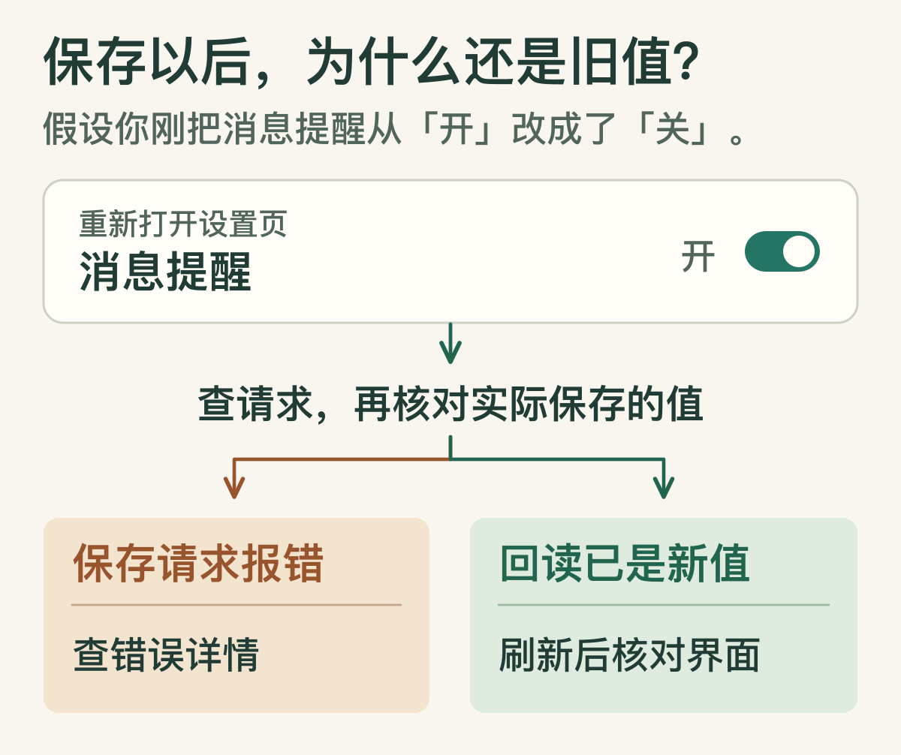
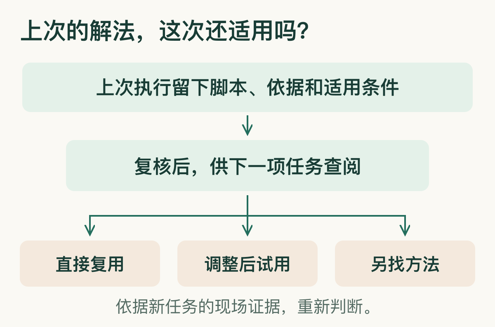

Context, Not Control
最近我常想一个问题。假如今天重新做一个已经在用的 Agent，换上我们现在能用到的前沿模型（frontier model），打开那张流程图，我还会在同样的地方画下同样的箭头吗？
一个 Agent 周围总有一套工程系统。它决定模型看得见哪些资料，可以调用哪些工具，也可能规定它必须先做 A、再做 B。工程师把这套东西叫作 harness。我们很习惯给它换一个更强的模型，然后跑一遍原来的任务。可如果连下一步做什么都已经写进代码，新模型究竟有多少机会用上自己的判断？
我的看法变得比以前激进了一点：今天，所有为模型设计的 harness，都值得拿今天的 frontier model 重做一遍。促使我这么想的，恰好是一套我自己很欣赏的设计。
我们团队做过一条测试流水线。给它一条用日常语言写的用例，它会准备环境、操作产品、检查结果。团队把每个环节里模型该做什么、出现异常该往哪走，一段段接起来。从工程师的角度看，我至今觉得那张图很漂亮。手指沿着线走，几乎每个转弯都有理由。
难处可以用一个假设的例子说明。关掉消息提醒，点保存，重新打开页面，开关却还开着。保存请求失败了？页面读的是旧数据？还是设置根本没持久化？如果你就在现场，大概会想先看一眼刚才的请求结果。可设计流水线时，你得提前想到会有这么一条线索，还得写下哪些情况要去查它。等几个看似熟悉的异常凑到一起，原来各自合理的分支也未必还适用。
后来团队换了个做法。我们把验收目标交代清楚，给模型可以动手、也能读回状态的 Tool，把环境怎么准备、工具适用在什么情况下写进 Skill。至于先查哪一项，让模型看过现场再选。在这小批试跑里，它完成了更多用例。我们初步看下来，它对通过和失败的判断也更准。那些它决定停下来的地方，理由听起来讲得通，还值得逐条复核。

团队的测试尝试。模型看到操作结果以后，可以再选一次动作。
这件事让我想到测试之外。假设我要做一个帮人排查软件问题的 Agent。有人说刚刚升级，应用就打不开了。很容易给它排好步骤，先读改动记录，再查源码，然后跑一次复现。可如果启动日志第一行就写着磁盘已满，我希望它下一步先核对可用空间。是不是升级引起的，可以稍后再说。让它照原路走，每一步都可能做得很认真，整件事却绕了远路。
设计 harness 的时候，有些步骤来自业务约定，有些来自我们对模型的印象，比如“得先替它拆好，否则它会漏”。两者写成代码，看上去一样坚固。时间一长，连当初为什么要加这一步都容易忘。模型换代以后，我最想重新打开的就是后一类决定。当初需要人扶一把的地方，今天还需要吗？
这里有个很实在的分别。哪个环境允许操作，什么结果足以判定通过，团队可以事先讲清楚，权限和预算也应由系统执行。至于打开哪份资料、查哪项状态、发现矛盾后要不要换个方向，执行者往往比画流程图的人多知道一点——它刚看过上一个动作的结果。这是我理解的 Context, Not Control。
以启动失败为例。团队限定排查范围，模型根据日志里的线索决定先查什么。
说来也有意思，我们试着松开一部分步骤之后，我反而更佩服团队先前做的工程工作。模型能判断，是因为它真的可以查到东西；它遇见问题能换条路，是因为手边有另一件可用的工具。早先为了让流水线跑起来而摸清的环境、写好的脚本、记下的经验，都成了它今天做决定的依据。
后来的几轮运行还有一个变化。头一轮花了好几个小时，接下来的一轮明显缩短，再往后又快了一些。每轮结束时，都会多出一些下一项任务能用的东西：有时是一段脚本，有时是改过的工具，有时是一条经验，说明这个办法在哪种条件下才管用。
这和给流水线再加一个分支，有个我很在意的区别。把解法写成固定分支，我得替下一次任务决定什么时候采用它。留下脚本、使用条件和当时的证据，下一次的模型可以看看眼前是不是同一回事，决定直接用、改一改，或者放在一边。经验经过复核再留下来，模型就有机会接着团队和前几轮执行的工作往下走。

留下解法和适用条件。到了新任务，模型仍有选择的余地。
现在样本还小，每轮任务难度也有差异。下一轮我想把问题问得更细一点。给两种做法同样的资料、工具和预算，让它们各自处理一批新任务，看看谁在什么时候换了路，那一步有没有带来更可靠的结论。对于确实省下时间的任务，再从相同起点重跑，暂时收起之前留下的脚本，看看省掉的究竟是哪段摸索。
做工程久了，我觉得最难察觉的一件事，是把自己曾经做对过的选择，当成了下一次工作的前提。尤其是那种花了很多心思、到今天我都觉得漂亮的设计。下次讨论时，只要我先把老流程图投到屏幕上，大家很自然就会开始想，箭头往哪里挪一挪。
所以下次我想晚一点再打开那张图。先问一句，如果今天是我们头一天碰到这个问题，用户希望我们帮他完成什么？比如用户只想知道应用为什么打不开，也愿意让我们读日志。那么“只能读”是他给的边界，“要先看升级记录”却是我们自己加的。这一区别，就是第一性原理思考（first-principles thinking）对我最实际的用处。把事情想回到这里，可试的做法一下子就多了。
以前有些念头，我会自己先放掉。为了知道一个想法行不行，就要专门花力气搭个原型，未必划算。现在有模型帮忙，做个只验证一个想法的小原型（POC），成本已经很低了。就拿那条启动日志，让模型自己挑第一项检查，看看它能找到什么，再看它的解释能不能被验证。这样的小尝试，值得给那些暂时说服不了我的想法一次机会。
我想保留的，是 Always Day One 的那点好奇。下次有人提一个出乎意料的做法，我希望自己能晚一点说“我们当初这么设计是有原因的”，先问他一句：“你想拿哪个问题试试？”